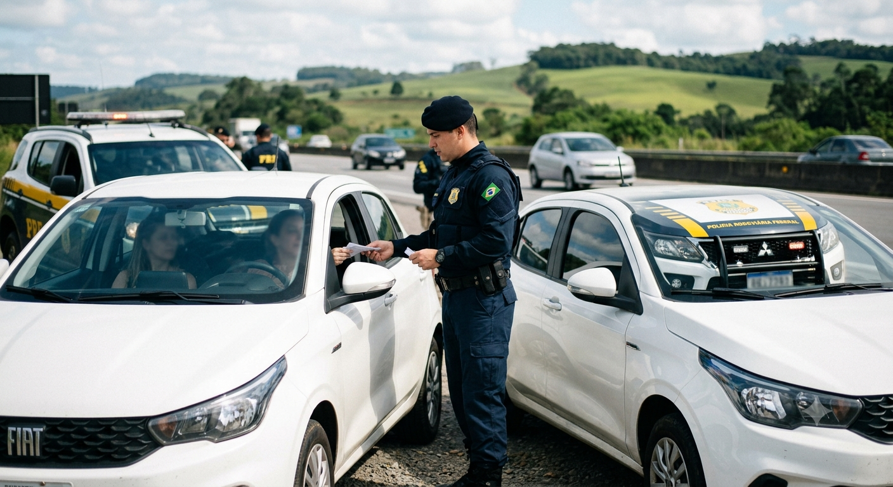
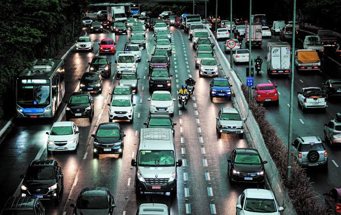

primeiro post
por rhyan
boas- vindas ao meu novo blog aqui vou compartilhar dicas maneiras
bem vindos, vou compartilhar sobre coisas maneiras

por rhyan
boas- vindas ao meu novo blog aqui vou compartilhar dicas maneiras

O trânsito faz parte da rotina de milhões de pessoas. Todos os dias, motoristas, motociclistas, ciclistas e pedestres compartilham as ruas e rodovias, tornando a atenção e o respeito às regras fundamentais para evitar acidentes e manter a circulação segura.
Uma direção segura começa antes mesmo de ligar o veículo. Faça uma verificação básica, principalmente antes de viagens longas: confira pneus, freios, iluminação, combustível e condições gerais do carro ou da motocicleta. Durante o trajeto: Respeite os limites de velocidade e a sinalização. Mantenha uma distância segura do veículo da frente. Use o cinto de segurança em todos os bancos. Motociclistas devem utilizar capacete adequado e devidamente afivelado. Evite usar o celular enquanto dirige. Nunca dirija depois de consumir bebidas alcoólicas. Redobre a atenção em dias de chuva, neblina ou baixa visibilidade. Respeite pedestres, ciclistas e os demais usuários da via.
A blitz é uma operação de fiscalização realizada pelos órgãos responsáveis pelo trânsito e pela segurança pública. Ela pode ter diferentes objetivos, como verificar documentação, condições dos veículos e possíveis infrações. Durante uma abordagem, o motorista deve manter a calma, reduzir a velocidade com segurança e seguir as orientações dos agentes responsáveis pela fiscalização. É importante ter em mãos os documentos exigidos pela legislação e manter o veículo em condições adequadas de circulação.
Dependendo da operação, podem ser verificadas situações como: Documentação do motorista e do veículo; Condições de segurança do veículo; Equipamentos obrigatórios; Sinais de alteração da capacidade de condução; Regularidade do licenciamento; Possíveis infrações de trânsito. As regras e procedimentos podem variar conforme a legislação e o órgão responsável pela fiscalização. Por isso, mantenha-se informado sobre as normas vigentes.
Ao encontrar uma operação de fiscalização, não tente fugir ou realizar manobras perigosas para evitar a abordagem. Isso pode colocar outras pessoas em risco e ainda resultar em novas infrações. O mais seguro é: 1. Reduzir a velocidade de forma segura. 2. Seguir as orientações dos agentes. 3. Manter a calma e permanecer no veículo quando solicitado. 4. Apresentar os documentos solicitados. 5. Esclarecer dúvidas de maneira respeitosa. 6. Cumprir as determinações legais da fiscalização.
Problemas no trânsito não acontecem somente por excesso de velocidade ou desrespeito à sinalização. Falhas mecânicas, falta de atenção e condições inadequadas da via também podem contribuir para acidentes. Por isso, a manutenção preventiva é essencial. Verifique regularmente pneus, óleo, freios, bateria, suspensão, faróis e limpadores de para-brisa. Em viagens, também é recomendável planejar o percurso, verificar as condições das estradas e fazer pausas para descanso.
Aplicativos de navegação podem ajudar o motorista a encontrar rotas e acompanhar as condições do trânsito. Porém, o celular deve ser configurado antes de iniciar a viagem ou utilizado somente de maneira que não comprometa a condução.
Um trânsito mais seguro depende da participação de todos. Motoristas, motociclistas, ciclistas e pedestres precisam conhecer seus direitos e responsabilidades e agir com atenção. Respeitar a sinalização, manter a calma, dirigir de maneira responsável e nunca assumir riscos desnecessários são atitudes simples que podem evitar acidentes e salvar vidas.
Conhecer as regras de trânsito é uma forma de proteger você e as outras pessoas. Em caso de dúvidas sobre legislação, multas, documentação ou procedimentos de fiscalização, procure sempre informações atualizadas nos canais oficiais dos órgãos de trânsito.